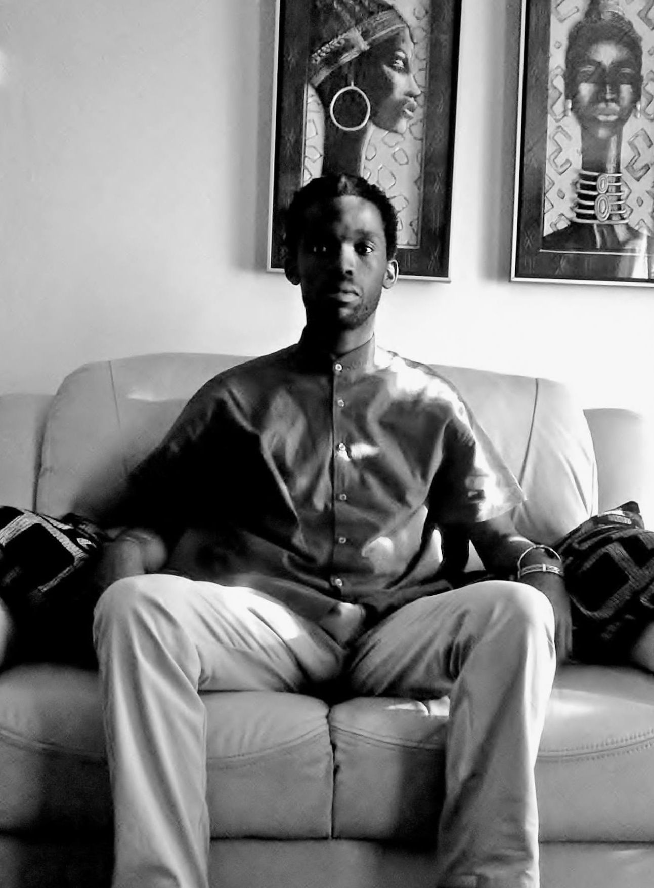

Filmmaker
Phumelelokuhle(known as Phume) Ngidi is a multi-disciplinary artist, majoring in Filmmaking. Phume was born and bred in Vosloorus - situated in the Eastern region of Gauteng. His quest is to tell stories that hold up a mirror to our ever-changing body of the contemporary society - as he assents to one of Nina Simone's principles that "it is an artist's duty to reflect the times in which we live".
After high school, he studied BA in Film and Television Communications at the University of Johannesburg - also majored in Media Communications and Philosophy. During his time in varsity,Phume also dabbled with performance arts i.e. plays Marat/Sade,Umsindisi,James and the Giant Peach and his recent works Choir Boy (Standard Bank Encore Award Winner 2018 ) & poetry i.e. King of the Mic for Word'nSound Season Episode 1,UJcanYouSlam 2017 finalist, and has four of his poems published in Poetry Potion and in an anthology titled Footprints of the Hearrt.
Drawing his inspiration from the dance of everyday life and the alluring beauty of magic and mysticism, Phume writes poems, short stories and any forms of audiovisual texts to provide answers to social ills and ask new questions that will somewhat propel us to a 'Utopian' society.